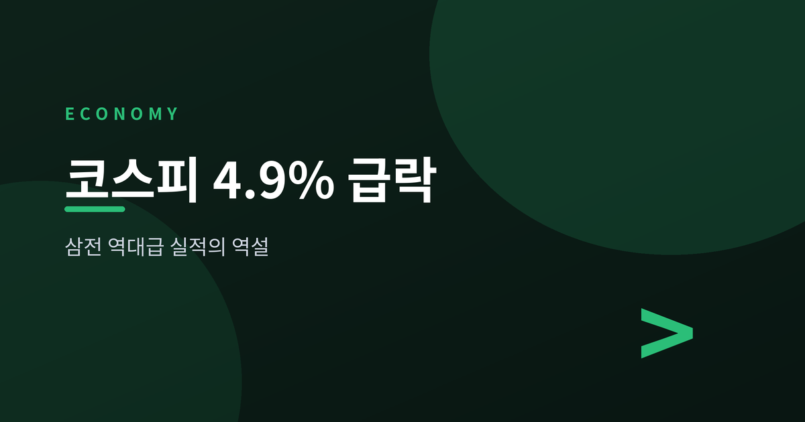
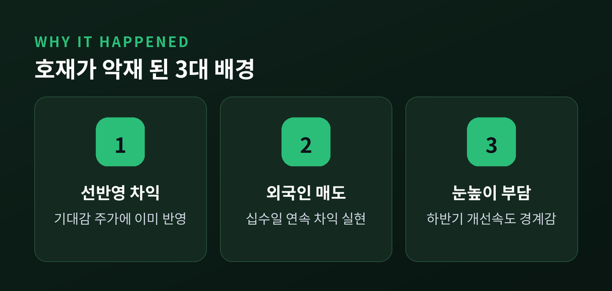
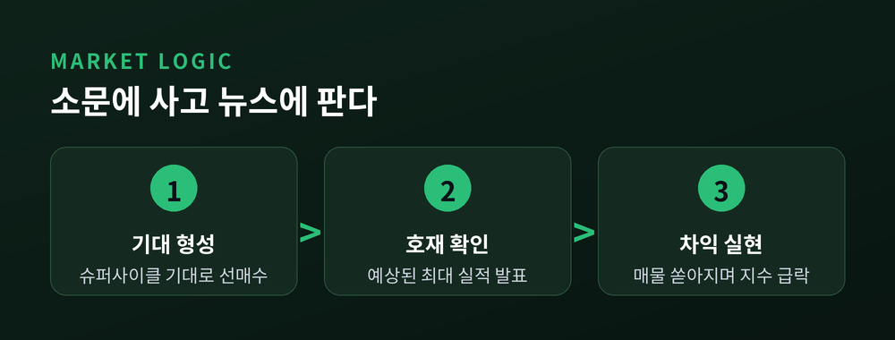
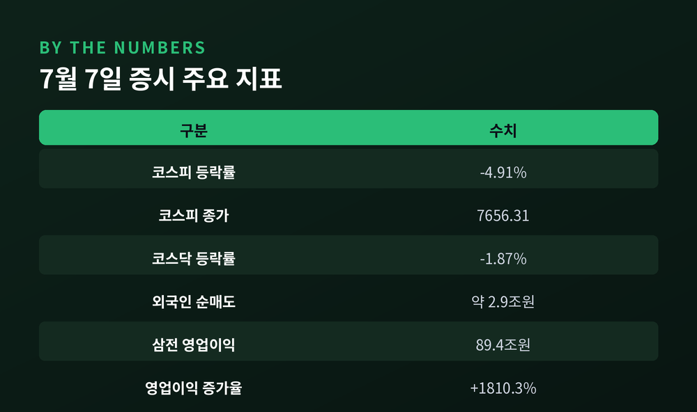

왜 호재가 악재가 됐나

2026년 7월 7일, 삼성전자가 사상 최대 규모의 분기 실적을 내놓았습니다. 연결기준 2분기 잠정 매출은 171조원, 영업이익은 89조4000억원으로 집계됐습니다. 전년 동기와 비교하면 영업이익이 무려 1810.3% 늘어난 수치입니다. 이 이익 규모는 같은 기간 엔비디아의 영업이익마저 넘어섰습니다. AI 서버 수요가 메모리 반도체 값을 끌어올린 결과입니다.
그런데 시장은 정반대로 움직였습니다. 이날 코스피는 전 거래일보다 395.02포인트, 즉 4.91% 내린 7656.31로 마감했습니다. 장중 낙폭이 커지자 오전에는 사이드카가, 오후에는 20분간 거래를 멈추는 서킷브레이커까지 발동됐습니다. 코스닥도 1.87% 내린 831.23으로 마쳤습니다. 주인공인 삼성전자 주가 역시 7% 안팎 급락했습니다.
수급을 보면 외국인이 유가증권시장에서 약 2조9000억원어치를 팔았습니다. 기관도 3000억원 넘게 순매도에 가세했고, 그 물량을 개인이 받아냈습니다. 최대 실적을 찍은 바로 그날, 지수는 검은 화요일을 맞은 셈입니다.

좋은 실적이 왜 주가를 끌어내렸는지부터 짚어야 합니다.
첫째는 기대가 이미 주가에 반영됐다는 점입니다. 반도체 슈퍼사이클 기대감으로 주가는 실적 발표 전부터 가파르게 올라 있었습니다. 예상된 호실적이 확인되는 순간, 차익을 실현하려는 매물이 쏟아졌습니다. "소문에 사고 뉴스에 판다"는 증시 격언이 그대로 재현됐습니다.
둘째는 외국인의 연속 매도입니다. 외국인은 이날까지 십수 거래일 연속으로 차익 실현에 나선 것으로 집계됐습니다. 지수를 밀어 올린 주체가 이익을 거둬들이자, 그 무게가 시장 전체를 눌렀습니다.
셋째는 하반기 눈높이 부담입니다. 이미 최고 수준에 올라선 실적을 앞으로 얼마나 더 끌어올릴 수 있느냐는 물음이 남습니다. 수익성 개선 속도가 지금 같지 않을 수 있다는 경계감이 매도 심리를 자극했습니다.
"중요한 건 실적 자체가 아니라 눈높이다. 예상을 뛰어넘는 서프라이즈가 아니면 차익 실현의 빌미가 된다." — 증권가 분석(다수 매체 종합)

관건은 이번 급락이 과열을 식히는 조정인지, 추세가 꺾이는 신호인지입니다. 지금으로선 전자에 무게를 두는 시각이 우세합니다. 실적이라는 기초 체력 자체는 오히려 탄탄해졌기 때문입니다.
앞으로 지켜볼 변수는 세 가지로 정리됩니다. 먼저 외국인 수급의 방향입니다. 연속 매도가 멈추고 순매수로 돌아서는지가 지수 반등의 열쇠입니다. 다음은 반도체 업황의 지속성입니다. AI 수요와 메모리 가격이 하반기에도 이어질지가 이익 눈높이를 지탱합니다. 마지막은 환율과 대외 여건입니다. 원/달러 환율과 글로벌 금리 흐름이 외국인 자금의 향방을 좌우합니다.
예전엔 좋은 실적 하나면 주가가 화답했습니다. 지금은 그 실적이 시장의 기대치를 넘느냐가 더 중요해졌습니다. 다음 분기 확정 실적과 하반기 가이던스가 이 물음에 답을 줄 분기점이 될 전망입니다.
### 7월 7일 증시 주요 지표
| 구분 | 수치 |
|---|---|
| 코스피 종가 | 7656.31 |
| 코스피 등락률 | -4.91% (-395.02p) |
| 코스닥 등락률 | -1.87% (831.23) |
| 외국인 순매도(유가증권) | 약 2조9000억원 |
| 기관 순매도 | 약 3000억원 |
| 삼성전자 2분기 영업이익 | 89조4000억원 |
| 삼성전자 영업이익 증가율(전년비) | +1810.3% |

이 글은 정보 제공을 목적으로 하며 투자 권유가 아닙니다.